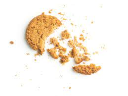

3 Ingredient Buiscuit

Description
This tasty recipie was passed down from my mother to me, It has always been a family favourite for those
sweet tooth moments. Not only is it a yummy quick treat it also only takes 3 Ingredients which you
are most likely to have laying around in your pantry!
Ingredients
- 5 cups all-purpose flour
- 500 g rama(margarine)
- 1 cup icing sugar
Steps
- Melt the margarine into liquid then in a bowl combine the flour and sugar with the margarine liquid,
mix well until dough is formed and combined well.
- use the dough cutters to cut any shape of choice then bake using 180° for about 15 minutes to 20 minutes
remove from the oven serve and enjoy!